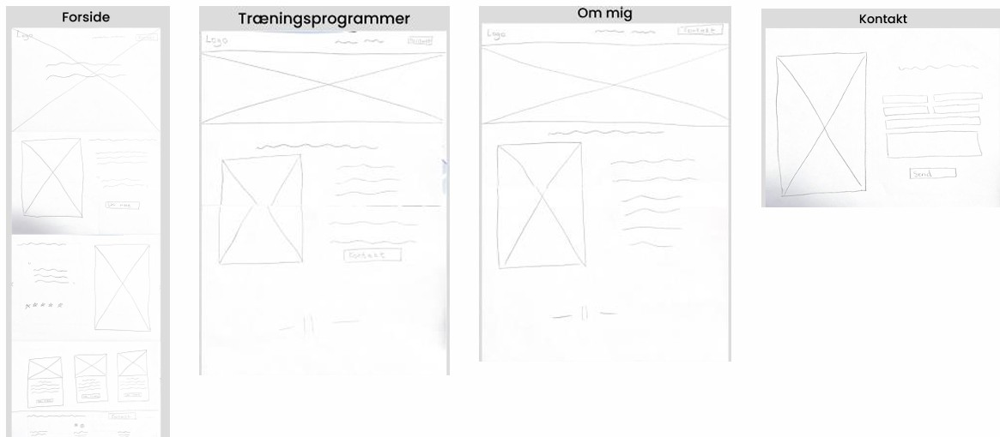
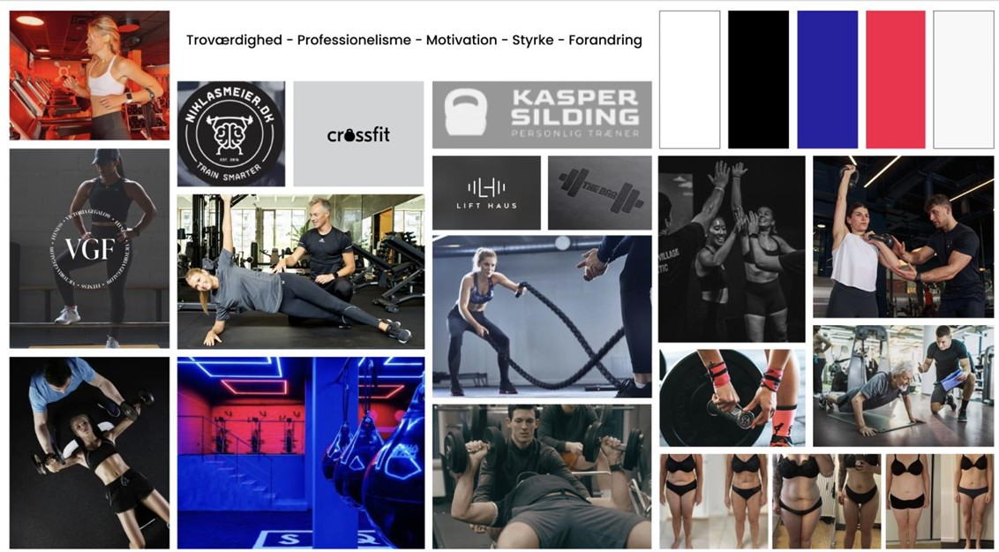
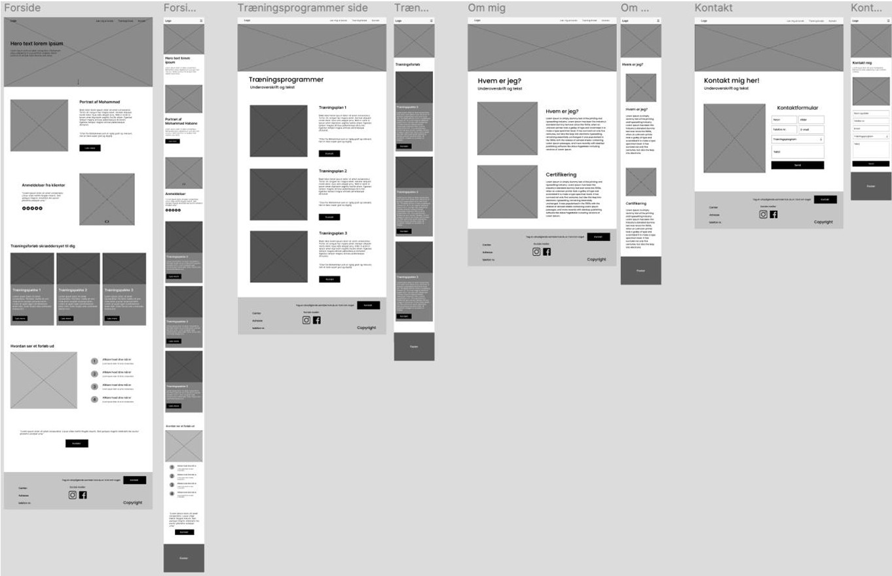
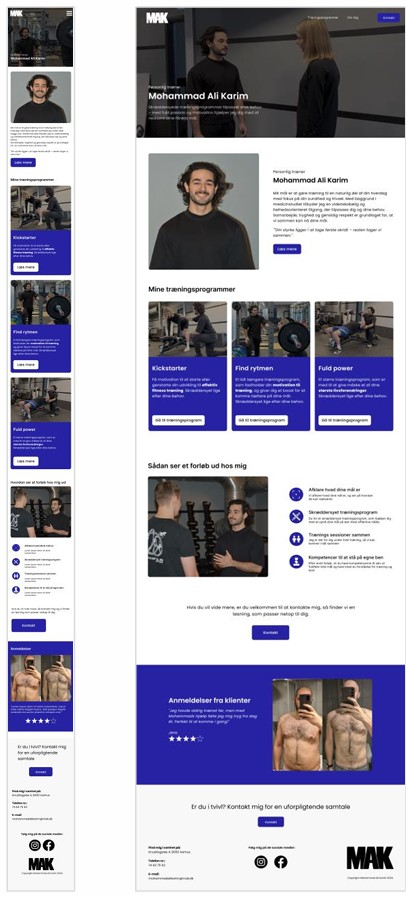
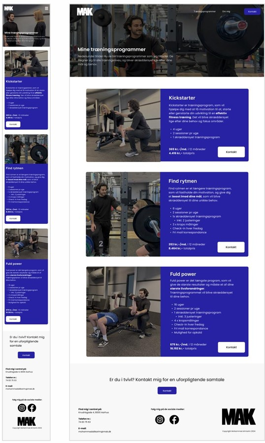
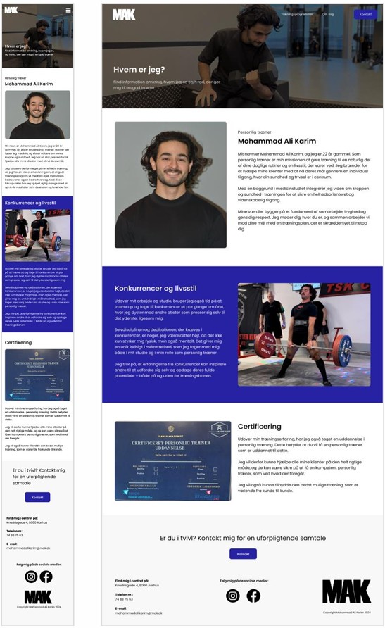

Værktøjer og programmer jeg har brugt i projektet:


Portfolio til en personlig træner
Dette studieprojekt blev udarbejdet som et gruppeprojekt med fokus på at udvikle en portfoliohjemmeside til en personlig træner.
Formålet med hjemmesiden var at skabe en professionel platform, hvor han kunne præsentere sine kompetencer og de services, han tilbyder. Samtidig var det vigtigt, at hjemmesiden udstrålede troværdighed og professionalisme, men stadig fremstod jordnær, personlig og nem at forstå for brugeren.
Projektet startede med research og analyse af målgruppe, visuel identitet og brugerbehov. På baggrund af dette udviklede vi moodboards for at definere det visuelle udtryk og den stemning, hjemmesiden skulle formidle.
Herefter arbejdede vi videre med wireframes og mockups for at skabe struktur, brugerflow og designløsninger til den endelige hjemmeside.
Derudover udarbejdede vi en designmanual for at sikre et ensartet visuelt udtryk gennem hele løsningen. Vi producerede også billeder og videoindhold til hjemmesiden samt udviklede en tone of voice, der understøttede trænerens personlighed og den professionelle, men tilgængelige kommunikation, som projektet havde fokus på.
Vi kodede selve hjemmesiden i HTML, CSS og JS, hvor vi implementerede det visuelle design og sikrede en brugervenlig oplevelse.
Gennem projektet arbejdede vi med både designproces, visuel kommunikation og brugeroplevelse for at skabe en løsning, der kombinerer design, funktionalitet og troværdighed.
Se udarbejdede materialer og designprocess nedenfor
og se hjemmesiden her.
Værktøjer og programmer jeg har brugt i projektet:
Se den udarbejde designnmanual her





